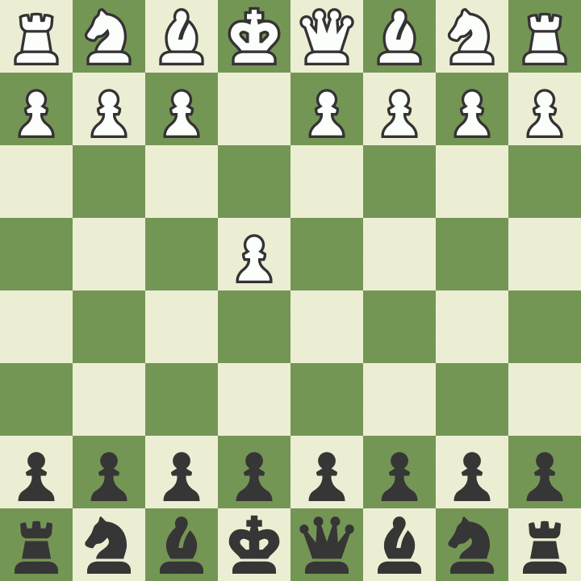

Championat Mensuel E-chess CIV

- Bravo à Cillian Graf, vainqueur du premier championnat E-chess mensuelle du CIV
- Le prochain tournoi sera le Dim 17 Nov à 14h
- Lien du tournoi
- Contact: +33 06 45 98 27 26
- Inscription gratuite
- tournoi amicale
parties

National 5
Cannes
2024/01/28
Ronde 6
Blanc: Maini Dan (1584)
Noir: Graf Cillian (1342)
Resultat 0-1
Cadence: 1h30+30s+30min au 40eme coup
Cannes
2024/01/28
Ronde 6
Blanc: Maini Dan (1584)
Noir: Graf Cillian (1342)
Resultat 0-1
Cadence: 1h30+30s+30min au 40eme coup